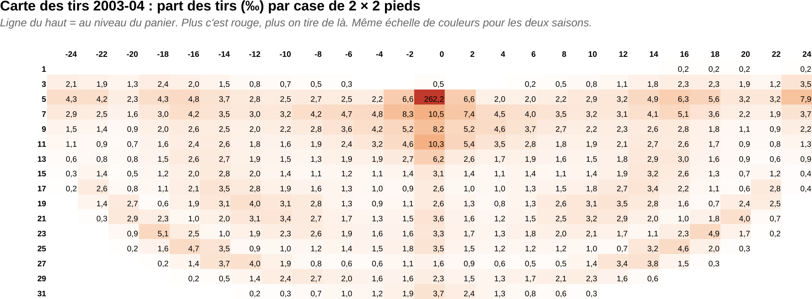
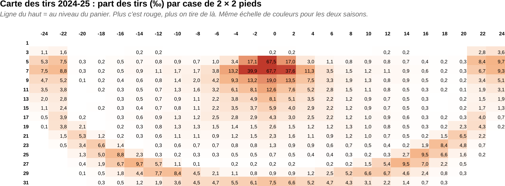
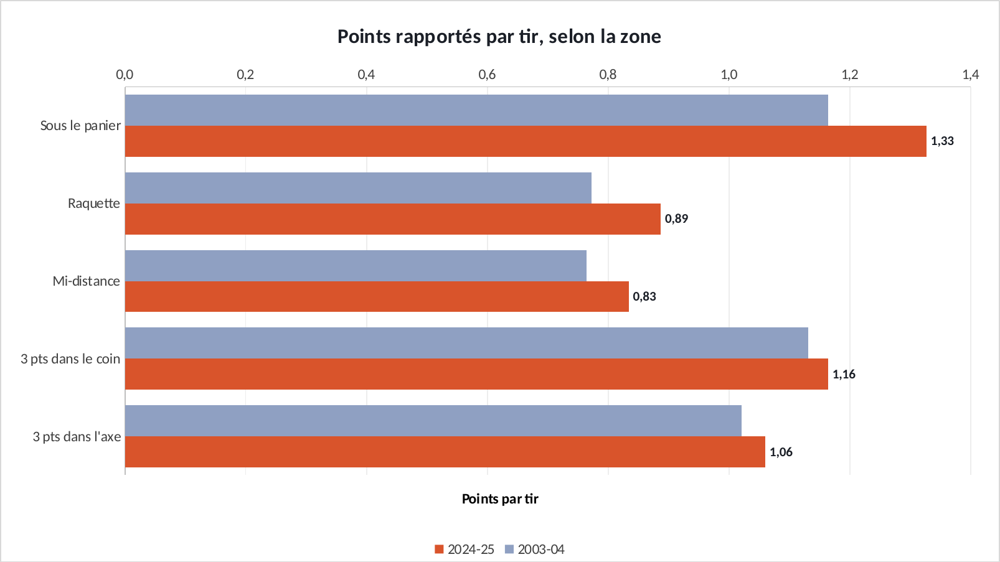
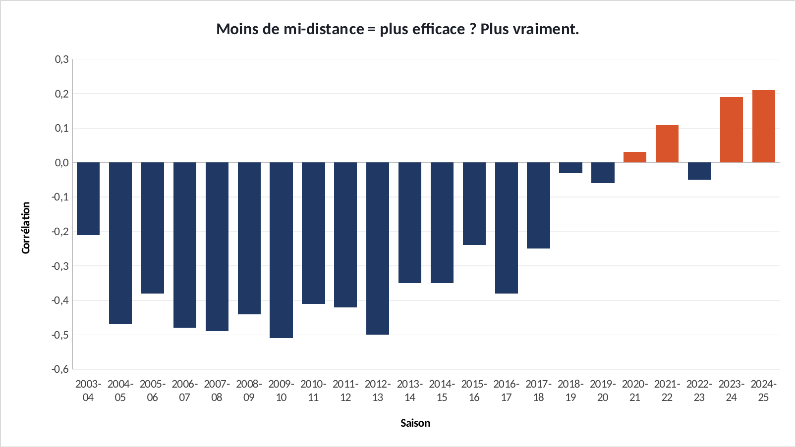

Étude · Basket × allocation de ressources
Le tir que la NBA a arrêté de financer.
Pourquoi les équipes NBA ont-elles presque abandonné le tir à mi-distance ? Parce qu'il rapporte moins de points que les autres. Sur 4 441 452 tirs, je mesure ce que rapporte chaque zone du terrain, et comment les équipes ont déplacé leurs tirs vers les plus rentables. Le même raisonnement qu'un budget marketing : on investit là où ça rapporte.
En 30 secondes
- Un tir, c'est une possession dépensée. J'ai mesuré ce que rapporte chaque zone du terrain : le rendement, en points par tir.
- Le mi-distance rapporte autour de 0,8 point par tir depuis 2004, contre plus de 1 pour n'importe quel 3 points. Chaque saison, sans exception. Les équipes n'ont réagi qu'à partir de 2012.
- Sa part est passée de 36 % à 10 % des tirs, pendant que le 3 points passait de 18 % à 42 %.
- Retournement final : maintenant que tout le monde l'a quitté, le mi-distance n'est plus un handicap pour ceux qui le gardent.
01 · Le terrain2004 contre 2025
Chaque case fait 2 pieds sur 2 (60 cm) et donne la part des tirs pris à cet endroit, en pour mille. Le panier est en haut. Même échelle de couleurs pour les deux saisons : la zone entre la raquette et la ligne à 3 points s'est vidée.


02 · Le rendementCinq canaux, cinq rendements
Si chaque zone du terrain était un canal d'acquisition, voilà son retour sur investissement : les points rapportés par tir tenté.

Source : NBA.com · 4 441 452 tirs, lancers francs exclus
Le mi-distance rapporte 0,83 point par tir. Un 3 points dans le coin, 1,16. L'écart est là depuis 2004, saison après saison. Seul le petit tir dans la raquette (le floater) fait aussi mal, et sa part a même augmenté, de 14 % à 20 % : c'est souvent ce qui reste quand une attaque vers le panier est freinée. Le coin, c'est la niche rentable : le 3 points le plus court du terrain (6,70 m contre 7,24 m dans l'axe), donc le plus réussi.
03 · La réallocationLe budget a changé de canal

Source : NBA.com · 2003-04 à 2024-25
Rien ne bouge pendant huit ans : le mi-distance perd à peine 5 points. Puis tout s'accélère à partir de 2012-13, la saison où les Houston Rockets deviennent l'équipe qui en prend le moins. Ils le resteront huit saisons de suite. Les données étaient disponibles pour tout le monde. Une équipe a décidé de s'en servir.
04 · La décompositionMieux tirer, ou tirer au bon endroit ?
Entre 2003-04 et 2024-25, la ligue est passée de 0,94 à 1,09 point par tir. Deux explications possibles : les joueurs sont devenus plus adroits, ou ils tirent depuis de meilleures zones. Une décomposition (classique en économie, et en analyse de mix marketing) permet de séparer les deux.
Sans qu'un seul joueur ne progresse, déplacer les tirs aurait suffi à gagner 0,053 point par tir. Sur les quelque 89 tirs d’une équipe par match, c’est environ 4,7 points par match, offerts par une décision d'allocation. Le reste vient d'une meilleure adresse, surtout sous le panier.
05 · Le retournementQuand tout le monde quitte un canal

Source : NBA.com · 30 équipes par saison
Jusqu'en 2015, les équipes qui tiraient le moins à mi-distance étaient nettement plus efficaces. Depuis 2019, ce lien a disparu, il s'inverse même légèrement. Le mi-distance ne s'est pas amélioré par magie : ceux qui le prennent encore sont des spécialistes, et les défenses ne le protègent plus.
06 · Et alors ?Ce que ça m'apprend sur le marketing
07 · LimitesCe que cette étude ne dit pas
Le calcul tient dans un seul script Python, relançable : il télécharge les 4 441 452 tirs et refait tous les calculs. Les graphiques, eux, sont construits dans Excel à partir de ces résultats.